Introdução à unidade
Nesta unidade, são estudadas as frações algébricas, as operações com frações algébricas e as equações fracionárias. Antes de iniciarmos o estudo de equações fracionárias, é retomado o estudo das equações do 1.º grau, estudadas no ano anterior.
A seguir, relacionamos os objetivos que se pretende atingir ao estudar os conceitos desta unidade.
Capítulo 1 - Frações algébricas
Objetivos:
- Compreender que todo quociente entre dois polinômios escritos na forma fracionária é uma fração algébrica.
- Traduzir situações do cotidiano em linguagem matemática, na forma de frações algébricas.
Capítulo 2 - Operações com frações algébricas
Objetivos:
- Aplicar corretamente os casos de fatoração para determinar o mínimo múltiplo comum entre polinômios.
- Simplificar expressões que envolvam frações algébricas, seguindo as mesmas regras da simplificação das frações numéricas.
- Realizar adições, subtrações, multiplicações e divisões entre frações algébricas, seguindo as mesmas regras das operações entre frações numéricas.
Capítulo 3 - Equações
Objetivos:
- Identificar e resolver equações do 1.º grau.
- Reconhecer como equação fracionária aquela que apresenta pelo menos uma incógnita em seu denominador.
- Determinar o conjunto-solução de equações fracionárias com uma incógnita.
- Resolver situações-problema que envolvam equações fracionárias com uma incógnita.
- Identificar equações literais e sua incógnita.
- Resolver situações-problema que envolvam equações literais.
Probabilidade e estatística - Ler e interpretar gráficos
- Analisar e interpretar informações apresentadas em tabelas e gráficos.
Probabilidade e estatística - Interpretação de gráficos
Objetivos:
- Analisar elementos do gráfico.
- Interpretar gráficos de diversos formatos.

Orientações específicas
Na abertura da unidade, é apresentada uma fórmula geral que permite transformar graus Celsius em Fahrenheit ou vice-versa. Ao conhecermos a temperatura dada em uma dessas unidades de medida, podemos fazer a transformação. Essa relação é comumente utilizada em Física. Quando fazemos esta transformação, recaímos em uma equação do 1.º grau com uma incógnita, que será retomada neste momento, para então iniciarmos o estudo de frações algébricas e posteriormente de equações fracionárias.

Converse
Atividade 1
A temperatura em Londres, nesta situação corresponde a -5ºC, ou seja, uma temperatura negativa. Para resolver essa situação basta substituirmos a medida em graus Fahrenheit na fórmula e resolvermos a equação do 1.º grau, cuja incógnita é a medida da temperatura em graus Celsius.
Atividade 2
Devemos utilizar a fórmula para transformar graus Celsius em Fahrenheit. Neste caso, seriam 95ºF. Note que em ambos os casos recaímos em uma equação do 1.º grau com uma incógnita para resolver as situações propostas. Explore esse conceito com os alunos.
|
Principais habilidades da BNCC |
EF08MA06 |
|
Competências |
CE7, CE8, CG9 |
Durante o estudo de frações algébricas, serão utilizados os casos de fatoração estudados na unidade 5. É importante fazer uma retomada de todos os casos, pois eles serão usados para simplificar as frações algébricas.


Encontre soluções
Atividade 5
- 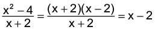
- 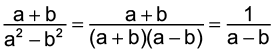


- 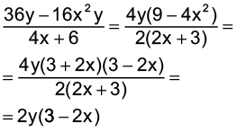

Atividade 6

- 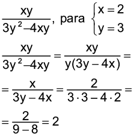


Atividade 7

- 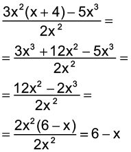

Atividade 8
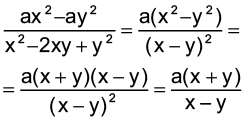
Atividade 9


|
Principais habilidades da BNCC |
EF08MA06 |
|
Competências |
CE6, CE8, CG9 |
Para realizar as operações com frações algébricas, é necessário relembrar os alunos como encontrar o mmc entre duas frações. Mostre que, para encontrar o mmc entre os denominadores de frações algébricas com polinômios, é necessário primeiro fatorar o polinômio.
Mínimo múltiplo comum entre polinômios
Pode-se determinar o mínimo múltiplo comum por meio da decomposição simultânea entre fatores primos ou ainda fazendo a decomposição de cada número natural separadamente e comparando os fatores. O mmc entre eles será o produto entre todos os fatores que aparecem na decomposição, elevados ao maior expoente.
Sugestão de atividade
- (UERJ) Na tabela abaixo, estão indicadas três possibilidades de arrumar n cadernos em pacotes:
N° de
pacotesN° de
cadernos por pacotesN° de
cadernos que sobraramX
12
11
Y
20
19
Z
18
17
Se n é menor do que 1 200, a soma dos algarismos do maior valor de n é:
- 12
- 17

- 21
- 26
Considerando os valores informados na tabela, temos as seguintes relações:
n = 12 ∙ x + 11
n = 20 ∙ y + 19
n = 18 ∙ z + 17
Note que se somássemos 1 livro ao valor de n, deixaríamos de ter o resto nas três situações, pois formaríamos mais um pacote:
n + 1 = 12 ∙ x + 12
n + 1 = 20 ∙ x + 20
n + 1 = 18 ∙ x + 18
Sendo assim, n + 1 é múltiplo comum de 12, 18 e 20, então, se encontrarmos o mmc (menor múltiplo comum), podemos a partir daí, encontrar o valor de n + 1.
Calculando o mmc
(12 - 18 - 20) = 180.
Então, o menor valor de n + 1 será 180. Entretanto, queremos encontrar o maior valor de n menor que 1 200. Assim, vamos procurar um múltiplo que satisfaça essas condições.
Para isso, vamos multiplicar o 180 até encontrar o valor desejado:
180 ∙ 2 = 360
180 ∙ 3 = 540
180 ∙ 4 = 720
180 ∙ 5 = 900
180 ∙ 6 = 1 080
180 ∙ 7 = 1 260 (esse valor é maior que 1 200).
Portanto, podemos calcular o valor de n:
n + 1 = 1 080
n = 1080 - 1
n = 1079
Sendo que a soma dos seus algarismos será dada por:
1 + 0 + 7 + 9 = 17

Encontre soluções
Atividade 3
- x2 - 2x = x(x - 2)
x2 - 4 = (x + 2)(x - 2)
mmc: x(x - 2)(x + 2)
- x - 7
x2 - 14x + 49 = (x - 7)2
mmc: (x - 7)2
- 3x - 27 = 3(x - 9)
x2 - 18 + 81 = (x - 9)2
mmc: 3(x - 9)2
- a2 - 1= (a + 1)(a - 1)
a2 + 2a + 1 = (a + 1)2
mmc: (a - 1)(a + 1)2
- y2 - 4 = (y + 2)(y - 2)
2y + 4 = 2(y + 2)
y2 + 4y + 4 = (y + 2)2
mmc: 2(y - 2)(y + 2)2
- 3m2
m2 - 25 = (m + 5)(m - 5)
m - 5
m2 - 10m + 25 = (m - 5)2
mmc: 3m2(m + 5) (m - 5)2
Encontre soluções
Atividade 1
- 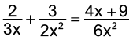

- 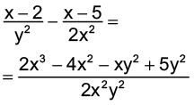

Atividade 2

- 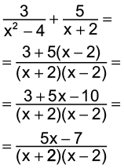


- 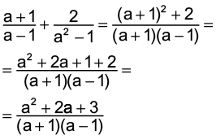
- 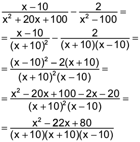

Atividade 3

Atividade 4

Atividade 5

Encontre soluções
Atividade 2


Atividade 3

- 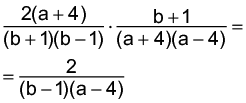


Atividade 4


- 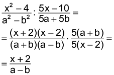

- 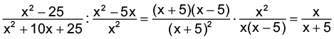


Atividade 5

Atividade 6


- 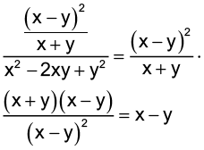
- 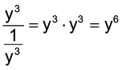


|
Principais habilidades da BNCC |
EF08MA06, EF08MA07, EF08MA19 |
|
Competências |
CE1, CE6, CE7, CE8, CG1, CG9 |
Iniciamos este capítulo retomando a resolução de equações do 1.º grau estudadas no ano anterior, para então os alunos resolverem situações-problema envolvendo equações fracionárias. Caso julgue necessário, outras situações envolvendo equações do 1.º grau podem ser exploradas.
A situação inicial é simples, envolvendo a quantidade de abacaxis e melões que há em uma cesta. Veja a resolução da equação.
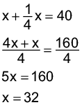
Portanto, na cesta há 32 melões e 8 abacaxis.


Converse com os alunos sobre o significado de equivalência, desde o seu significado na língua portuguesa e também no entendimento pessoal deles. Relembre o funcionamento de uma balança de dois pratos, para explicar como é feita a medição da massa de objetos e a relação do equilíbrio entre os dois pratos; discuta o que acontece quando retiramos um determinado elemento de um lado da balança, e leve-os a refletir: o que fazer para retomar o equilíbrio dos dois pratos? Deixe que percebam que tanto se pode retirar um elemento do outro prato ou recolocar o elemento de volta, possibilitando a percepção a respeito do equilíbrio que se mantém, desde que a mesma ação seja feita nos dois lados da balança.
Ribeiro (2008, p. 73-74) apresenta um panorama geral das contribuições advindas da história das equações para a Matemática. De acordo com este autor, atualmente, as grandes áreas em que a Matemática está dividida tiveram origem, em boa parte, por problemas envolvendo a busca pela solução de equações dos tipos mais variados.
Ele apresenta um estudo sobre as diferentes maneiras de como a noção de equação foi concebida e tratada pelos estudiosos em cada época histórica. Já apresentamos esse resumo no manual do 7.º ano. Porém, reapresentamos neste momento para que você tenha mais informações sobre como ocorreu esse processo.
- Babilônios e egípcios: trabalhavam com equações que em sua maior parte eram originárias de problemas de ordem prática. A noção de equação tinha basicamente um caráter pragmático, que, de forma intuitiva, igualava duas quantidades, com a finalidade de encontrar o valor da quantidade desconhecida. Na maior parte das vezes, a busca pelas soluções estava relacionada a equações particulares, para resolver problemas específicos e os métodos utilizados estavam relacionados a ideias aritméticas sem a preocupação de se encontrar soluções gerais.
- Gregos: para eles as equações já eram concebidas de maneira diferente dos babilônios e egípcios, pois não estavam procurando resolver equações que tinham sido originadas de problemas de ordem prática. A noção de equação contemplava um caráter geométrico e de forma dedutiva, a resolução repousava em manipulações geométricas. Percebe-se que mesmo com a mudança de concepção acerca da álgebra nesse período - de aritmética, nos babilônios e egípcios, para geométrica, nos gregos - a busca pelas soluções ainda estavam relacionadas a equações particulares e não a métodos gerais.
- Árabes e hindus: trabalhavam tanto com equações originárias de problemas de ordem prática, quanto com situações que recaiam em interpretações e manipulações geométricas. A noção de equação já tinha um caráter mais algébrico, mais generalista, pois passava de um catálogo de expressões que se sabe resolver para um catálogo de todas as formas canônicas possíveis. Percebe-se então uma preocupação na busca de formas canônicas, como fez al-Khwarizmi ao estabelecer todas as possibilidades para o que conhecemos por trinômios de grau não superior a dois. Por outro lado, Khayyam já tinha uma concepção de equação mais relacionada a um caráter geométrico, interpretando as soluções das equações como a intersecção de curvas geométricas.
- Europeus: eram vistas dentro de um sistema estrutural com propriedades e características bastante definidas. A equação é considerada em si própria, operando-se sobre ela mesma, com a finalidade de se encontrar soluções gerais. Após a descoberta das fórmulas gerais para resolução das equações do terceiro e quarto graus, há uma modificação no rumo das investigações. A nova questão que norteia as investigações passa para: será que existe algoritmo para resolver equações com grau superior a quatro? Nessa nova direção, as equações continuaram sendo tratadas com o mesmo caráter estrutural, até que Galois encerra a discussão fornecendo condições de se decidir quando essas equações são solúveis por radicais.
O estudo das equações algébricas contribui de forma significativa para o aparecimento da chamada Álgebra Moderna.

Encontre soluções
Atividade 1

3x - 18 = 4x + 8
3x - 4x = 8 + 18
-x = 26
x = -26 S = {-26}

22x - 10x = 60
12x = 60
x = 5 S = {5}

10x - 10 + 12x = 17x
17x - 10x - 12x = -10
-5x = -10
x = 2 S = {2}

a = 5 - 6
a = -1 S = {-1}

3x - 5x = -10
-2x = -10
x = 5 S = {5}

96a = 21

Atividade 2
- (a - 1)(a - 2) = (a + 2)(a + 1)
a2 - 2a - a + 2 = a2 + a + 2a + 2
-3a - 3a = 0
a = 0 S = {0}
- 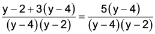
y - 2 + 3y - 12 = 5y - 20
-y = -6
y = 6 S = {6}


18 = a2 - 2a - (a2 + 2a + a + 2)
18 = a2 - 2a - a2 - 2a - a - 2
5a = -20
a = - 4 S = {- 4}
- 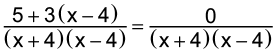
5 + 3x - 12 = 0
3x = 7


3a + 3 + a = 4
4a = 1


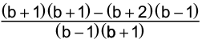
b2 + b - 3b - 3 + 4b - 4 - b2 + b = b2 + 2b + 1 - (b2 - b + 2b - 2)
3b - 7 = b2 + 2b + 1 - b2 + b - 2b + 2
3b - 7 = b + 3
2b = 10
b = 5 S = {5}

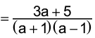
a2 - a - a2 - a = 3a + 5
-2a - 3a = 5
-5a = 5
a = -1 S = {Ø}
Neste caso, como a = -1 e “a” deve ser diferente de -1, então S = {Ø}.
Atividade 3
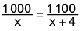
1 100x = 1 000x + 4 000
1 100x - 1 000x = 4 000
100x = 4 000
x = 40 famílias
Há na comunidade
40 + 4 = 44 famílias.
Atividade 4

750x = 500x + 2 000
250x = 2 000
x = 8 horas
Atividade 5
Sendo x a quantidade de garçons, tem-se:

312x = 360x - 720
48x = 720
x = 15
No sábado trabalharam 15 garçons e no domingo 13. Cada um recebeu R$ 24,00 de gorjeta.
Atividade 6
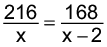
168x = 216x - 432
48x = 432
x = 9
Para embalar os copos foram usadas 9 caixas e para embalar os pratos 7 caixas.
Atividade 7
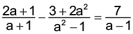,
com a ≠ -1 e a ≠ 1.

2a2 - 2a + a - 1 - 3 - 2a2 = 7a + 7
- 2a + a - 7a = 7 + 4
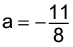
Atividade 8
x: preço do prato principal
x - 3: preço de cada sobremesa
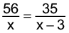
35x = 56x - 168
21x = 168
x = 8
a) Neste grupo há 7 pessoas.
b) O prato principal custou R$ 8,00.

Encontre soluções
Atividade 4
- 2x + 3m = x
2x - x = - 3m
x = -3m
S = {- 3m}
- 12x + 5y = 10x - 8y
12x - 10x = - 8y - 5y
2x = -13y
x = 
S = 
- x(b + 7) = 2(x - 3)
bx + 7x = 2x - 6
bx + 7x - 2x = - 6
bx + 5x = - 6
x(b + 5) = - 6
x = 
S = 
- a(4x + 8) - b(x + 2) = 16a - 4b
4ax + 8a - bx - 2b = 16a - 4b
4ax - bx = 16a - 4b - 8a + 2b
x(4a - b) = 8a - 2b
x(4a - b) = 2(4a - b)
x = 2
S = {2}
Solução gráfica de uma equação do 1.° grau com 2 incógnitas
Neste momento, apresentamos a resolução gráfica de uma equação com duas incógnitas, o objetivo é que os alunos observem que podemos atribuir um valor a uma das incógnitas e, então, determinar as soluções por meio de cálculos e compreender a representação das soluções dessas equações no plano cartesiano. Basta conhecer dois pares ordenados que correspondem a soluções de uma equação do 1.° grau com duas incógnitas, para conseguirmos traçar a reta que representa todas as soluções dessa equação.


Retome com os alunos o que são pares ordenados. Antes de iniciar as soluções, pergunte quantas respostas são possíveis para o problema apresentado nesta página. Em seguida, relembre alguns fatos básicos da ideia de plano cartesiano, como pares ordenados, abcissas, quadrantes e proponha alguns exemplos para que indiquem os pontos no plano cartesiano. Lembre os alunos que no caso dos cestos, estamos considerando apenas os cestos finalizados. É importante tomar cuidado com o conjunto numérico em que se apresenta a solução, já que esse problema só permite as soluções que pertencem ao conjunto dos números naturais. Porém a mesma equação pode conter outras soluções, se retirada desse contexto.
|
Principais habilidades da BNCC |
EF08MA12, EF08MA13 |
|
Competências |
CE6, CE8, CG9 |
Inicialmente, retomamos o estudo de proporcionalidade direta, utilizando alguns exemplos e reapresentando o conceito de grandezas diretamente proporcionais e inversamente proporcionais. Aproveite para esclarecer eventuais dúvidas que os alunos possam ter sobre o assunto.
Na situação 2, retome com os alunos o conceito de velocidade média (Vm), mostrando que é a razão entre a distância (d) percorrida e o tempo (t) gasto para percorrê-la.


Retome com os alunos a fórmula para o cálculo da velocidade média, retomando também os termos envolvidos como variação de espaço, variação de tempo e o porquê do termo velocidade média utilizado na física.
Quando um objeto está se movendo em linha reta e com velocidade constante, o cálculo é dado por:
v = Δs/Δt, onde Δs é o deslocamento e Δt é o intervalo de tempo.
Quando o objeto se move com variação na velocidade, podemos calcular sua velocidade média. Exemplo:
Um carro percorre uma determinada distância em um intervalo de tempo, ele provavelmente não ficou em velocidade constante o tempo todo.
Podemos calcular sua velocidade média vm a partir de um deslocamento Δs e um intervalo de tempo Δt.
Representação gráfica
Caso julgue pertinente, pergunte aos alunos o porquê dessa reta passar, necessariamente, pela origem. O objetivo é que os alunos percebam que, ao multiplicarmos uma das grandezas por uma constante, a outra grandeza deverá ser multiplicada por essa mesma constante. Quando x e y são diretamente proporcionais, o formato que o gráfico toma é o de uma reta que passa pela origem.


Os pontos obtidos pertencem a uma curva chamada de hipérbole, que será estudada no Ensino Médio.
Encontre soluções
Atividade 1
Nesta atividade, contém a informação de que a administração de um antibiótico é 60 mg/kg/dia, isso significa que 1 kg equivale a 60 mg. O médico prescreveu 290 mg, 3x ao dia = 870 mg. Então a regra de três é a seguinte:
1 kg - 60 mg
x kg - 870 mg
x = 14,5 kg
Atividade 2
Como o ano tem 365 dias, assim:
365 dias x 56 anos = 20 440 dias.
20 440 dias ÷ 54 anos = 730 dias.
Atividade 3
Os outros 3 grupos vão fazer nos 4 segundos. Só um grupo vai demorar mais, pois perdeu uma pessoa.
T: tempo para a troca do pneu.
P: número de pessoas na troca.
T é inversamente proporcional a P.
T = K (constante de proporcionalidade) / P
4 = K/3
K = 12
T = 12/2 = 6 segundos.
Atividade 4
Comente com os alunos que o gráfico 1 é uma reta, porém não passa pela origem; o gráfico 4 passa pela origem, porém não é uma reta.

Probabilidade e estatística — Interpretação de gráficos
Atividade 1
- Espera-se que os alunos relatem que pode ser em busca de proteção em razão de perseguição relacionada às questões de raça, religião, opinião política, nacionalidade, pertencimento a grupos minoritários, ou mesmo em meio a circunstâncias estruturais de desorganização da vida social e, consequente, risco ou efetiva violação dos direitos humanos.
Se possível, leia para os alunos o seguinte texto:
Quem pode ser considerado um refugiado?
A lei brasileira de refúgio nº 9474/1997 define como pessoa refugiada aquela que:
I — devido a fundados temores de perseguição por motivos de raça, religião, nacionalidade, grupo social ou opiniões políticas encontre-se fora de seu país de nacionalidade e não possa ou não queira acolher-se à proteção de tal país;
II — não tendo nacionalidade e estando fora do país onde antes teve sua residência habitual, não possa ou não queira regressar a ele, em função das circunstâncias anteriores;
III — devido a grave e generalizada violação de direitos humanos, é obrigado a deixar seu país de nacionalidade para buscar refúgio em outro país.
Estas definições seguem a Convenção de 1951 relativa ao Estatuto dos Refugiados e também a Declaração de Cartagena de 1984 que amplia a definição inicialmente prevista na Convenção de 1951.
Fonte: UNHCR/ACNUR — Agência da ONU para refugiados — Brasil. Disponível em: https://www.acnur.org/portugues/dados-sobre-refugio/perguntas-e-respostas/#refugiado. Acesso em: 11 jun. 2022.
Depois promova uma discussão a respeito dessa realidade e questione se os alunos conhecem algum refugiado atualmente.

Atividade 3
De acordo com o gráfico 25% de internautas responderam “não” à enquete. Logo: 25% de 279 internautas corresponde a 69,75, sendo então mais de 50 e menos de 75.
Sugestão de atividade
- Após os alunos realizarem as atividades propostas no livro sobre interpretação de gráficos, você poderá realizar com eles trabalhos em grupos. Os grupos poderão construir gráficos utilizando o software LibreOffice e formular questionamentos sobre as informações que constam no gráfico construído para que outro grupo as respondam.

Relembre
Atividade 1
- 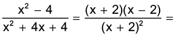


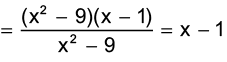
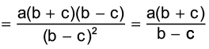
Atividade 2
3x - 27 ≠ 0
3x ≠ 27
x ≠ 9
Atividade 3

Atividade 4
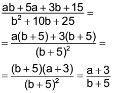
Atividade 5

Atividade 6
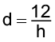
Para h = 2 tem-se d = 6.
Para h = 4 tem-se d = 3.
Para h = 6 tem-se d = 2.
Atividade 7

2a2 - 3a + 9 = 2a2 - 6a
2a2 - 3a +6a - 2a2 = - 9
3a = - 9
a = - 3
Atividade 8

Atividade 9
x2 - 16 = (x + 4)(x - 4)
(x + 4)(x - 4) ≠ 0
x + 4 ≠ 0
x ≠ - 4
x - 4 ≠ 0
x ≠ 4
Atividade 10

x(x - 1) = (x + 1)2
x2 - x = x2 + 2x + 1
3x = -1
Atividade 11
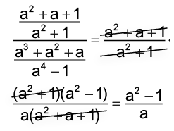
Atividade 12
Rei: 
Rainha: 
Primeiro príncipe: 
Segundo príncipe: 
Terceiro príncipe: 
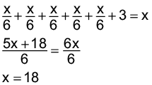
No total, há 18 mangas.